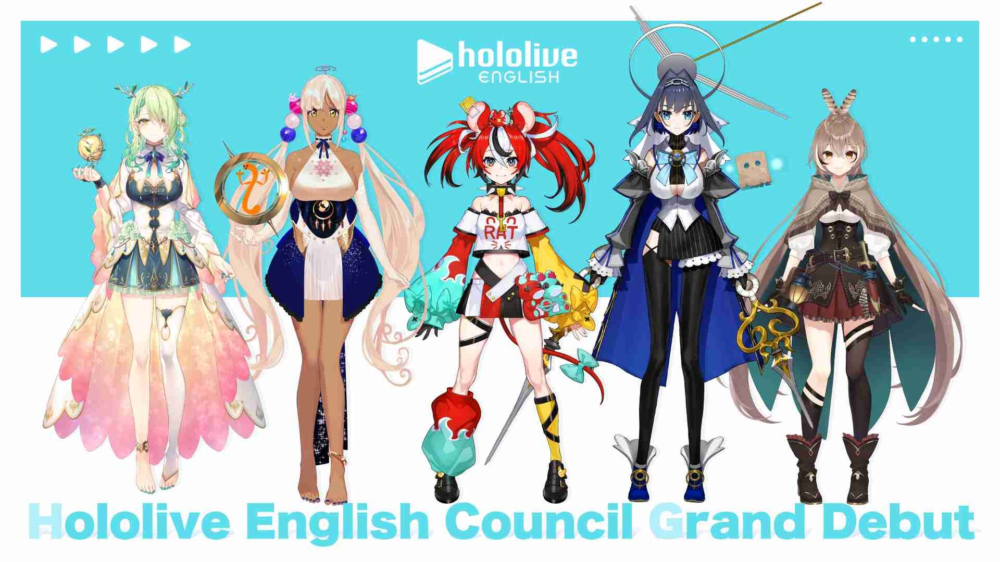

我與bae的相遇
人物介紹
人物設定我覺得就不用放了，簡單介紹一下就好，畢竟holo的傳統，規則就是用來打破的 。
簡單來說，bae的全名為Hakos Baelz，為hololive English分部的「Council」成員之一。

認識
hololive是在2021/8/17放出他們的新藝人組合Council 將於8/22同一天全部進行初配信，我其實在放消息的第一天就知道bae，不過那時候我還沒有任何的感覺，單純只有看來我又有5個新成員可以推 的想法。
8/22他們進行初配信的時候，我一個都沒跟到，因為最早的sana是台灣時間凌晨1:00開始直播，而最晚的bae則是7:00開始，她們5個在初配信的時候我都剛好在睡覺，而且事後我也沒補檔（我真的好懶惰）。
開始喜歡
其實一開始在只看皮跟聲音，還對她們的直播風格沒有什麼認識的時候，我最喜歡mumei ，因為天然呆、皮跟聲音都很可愛。
但是在某一天，我的Youtube首頁突然推薦這段烤肉給我：
念完SC後真情流露的Baelz…
「我覺得我做得還不足以…讓我去得到這些…好意」
「你們人真的太好了」
「我只知道從今以後 我會竭盡所能」
「來確保你們每個人都能好好享受我的直播」
雖然基本上holo成員在收益化解鎖後的第一場直播，都會被海量的superchat嚇到，但我還是第一次看到因為superchat太多，而慌張到哭的。
本部落格所有文章除特別聲明外，均採用 CC BY-NC-SA 4.0 許可協議。轉載請註明來自 Scar's Blog！